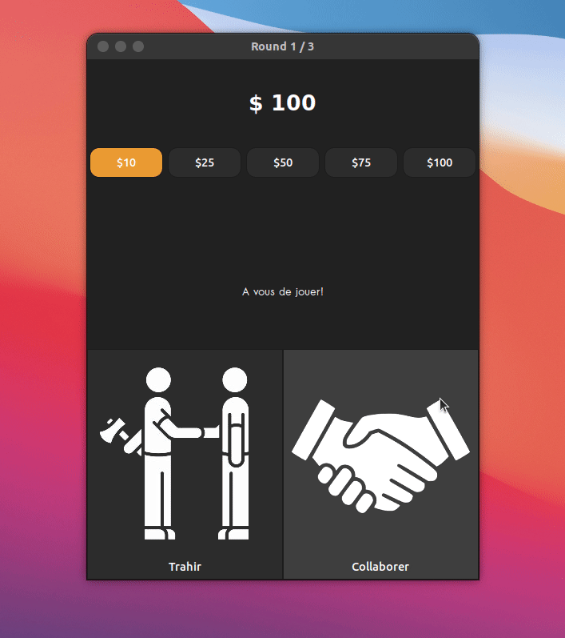

ICS - Dilemme du prisonnier
Contexte
L’ICS (institue of Cognitives Sciences) est un laboratoire interdisciplinaire qui intègre l'expertise de chercheurs des Sciences de la Vie (psychologie cognitive, neurosciences) et de médecine (pédopsychiatrie, neuro-pediatrie) avec celle de chercheurs des Sciences Humaines et Sociales (linguistique computationelle et théorique et philosophie) pour étudier la nature et la spécificité de l'esprit humain.
Le doctorant, qui n’est pas un développeur, a besoin d’accumuler des données expérimentales. Il a besoin que des volontaires jouent l’un contre l’autre un nombre de fois à définir, sans jamais savoir qui sont leurs adversaires. On définira une partie comme étant un certain nombre de rounds. Un round est défini comme une confrontation trahison-collaboration entre les deux volontaires.

Documentation
1. Installation
2. Configuration
2. Développement
Installation
Dépendances
Ce projet est dépendant de la librairie libconfig.
Distribution basée sur Ubuntu (Ubuntu, Linux Mint, Elementary, etc)
Exécutez la commande suivante dans un terminal.
sudo apt install libconfig-dev
Fedora, CentOS
Exécutez la commande suivante dans un terminal.
dnf install libconfig-devel
How to use
Exécutez la commande suivante dans un terminal.
Configuration
Configuration serveur
La configuration du serveur se trouve dans le fichier output/config/server_config.cfg une fois le serveur compilé.
Configuration client
La configuration du client se trouve dans le fichier output/config/client_config.cfg une fois le client compilé.
Il est par ailleurs possible de modifier la configuration en ajoutant des arguments à l'exécution du programme, ces changements sont prioritaires par rapport au fichier de configuration.
Développement
Debug
Il est possible de désactiver le mode DEBUG sur le serveur et le client en ajoutant -DNDEBUG lors de la compilation.
Dans le Makefile modifié la ligne comme ceci :
CFLAGS := -Wall -Wextra -g -std=c11 -DNDEBUG
Protocole
| Code | Client | Server | Détails |
|---|---|---|---|
| 16 | CONNECT | ||
| 17 | CONNECTED | Connected_data : (balance initiale, adversaire_id) | |
| 18 | FAILED | L'utilisateur n'est pas présent dans la configuration serveur | |
| 19 | GAME_START | Max round count | |
| 20 | ROUND_START | (Envoie simultané aux deux clients : current_round, délai de jeu) | |
| 21 | ACTION | (mise, action, tmps réaction) | |
| 22 | ROUND_END | Envoie des résultats (vainqueur, perdant) | |
| 23 | GAME_END | (round == maxRound || balance == 0) | |
| 24 | DISCONNECT | ||
| 24 | DISCONNECT |